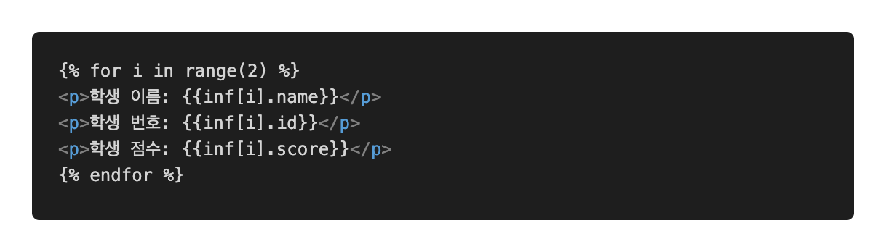
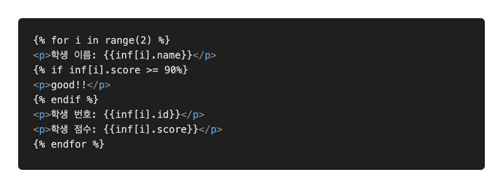

Flask HTML
Flask는 Jinja라는 엔진으로 HTML을 보내고 응답을 받기 때문에, 특별한 HTML 양식이 있습니다.
1. 변수처리
우선 파이썬에서 변수에 특정 값 (str, int, float) 등을 담는다. 그리고 그것을 render_templates를 통해 넘겨준다. (render_templates 부분 참고)
HTML에서 해당 변수를 {{ }} 를 통해서 받아준다.


var라는 변수에 임의의 값을 넣어주고, 이를 HTML에서 {{ }}안에 적어주면 원하는 값이 나오게 된다.
소수점 절사, 형태바꾸기
다음과 같은 방법을 사용하여 소수점 처리하거나 변수타입을 바꿀 수 있다.
var에 담은 내용을 다음과 같은 형태의 데이터로 변경하고 페이지에 접속하면 1.939... 하고 값이 길게 나오게 된다. 이것을 소수점 두번째 자리에서 반올림 하고 싶은 경우, HTML을 아래와 같이 수정한다.
이렇게 되면 소수점 두번째 자리까지만 나오게 만들 수 있게 된다.
여러개의 변수 깔끔하게 처리하기
파이썬 자료형인 dictionary를 통해서 여러개의 변수를 쉽게 처리할 수 있다.

이렇게 여러개의 변수를 넣고 HTML에 적는다고 생각해보자. 코드가 너무 길어지고 복잡해진다. 이것을 아래와 같이 수정하면 좋다.
- 흐름처리
if, for 를 HTML자체에서 활용할 수도 있다. 그것을 위해선
{% %}안에 흐름문을 넣어주면 된다.1. for 문
위에서 사용한 HTML을 보면, 동일하지만 인덱스 번호만 다른 값이 반복되고 있다. 지금은 2개이지만 이것이 엄청 많아질 경우 하나하나 코딩을 할 수는 없다.
 위처럼
for를 쓸 수 있다.enumerate나zip같은 것은 사용해줄 수 없고,list인덱싱과range함수만 사용할 수 있다.그리고 구분을 위해 for가 끝나는 곳에는
{% endfor %}를 붙여주어야 한다.2. if 문
만약 90점이 넘는 학생에 good을 붙여주고 싶다고 가정해보자. 그러면 다음과 같은 방법으로 쉽게 할 수 있다.
 python과 동일하게
if문을 작성할 수 있고,else,elif등도 사용가능하다. 동일하게 끝에{% endif %}를 붙여주어야 한다.